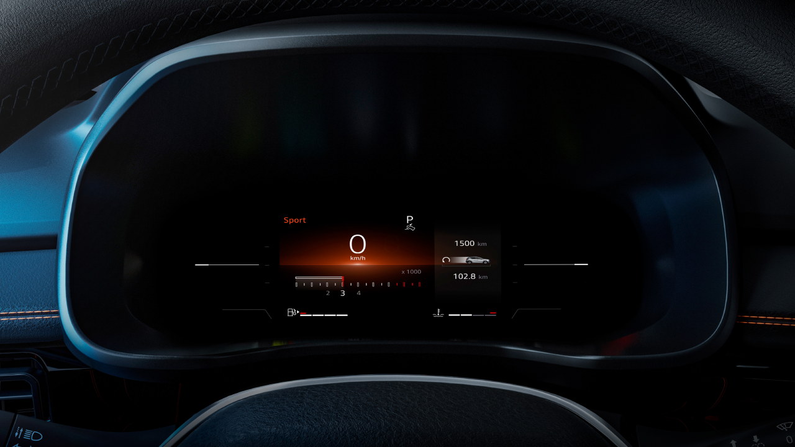
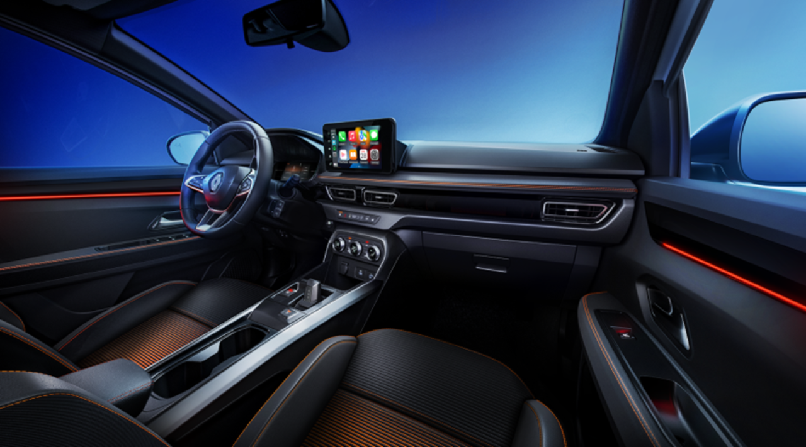
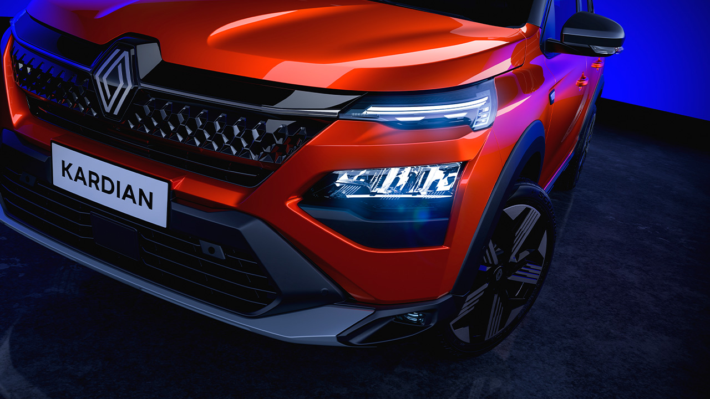
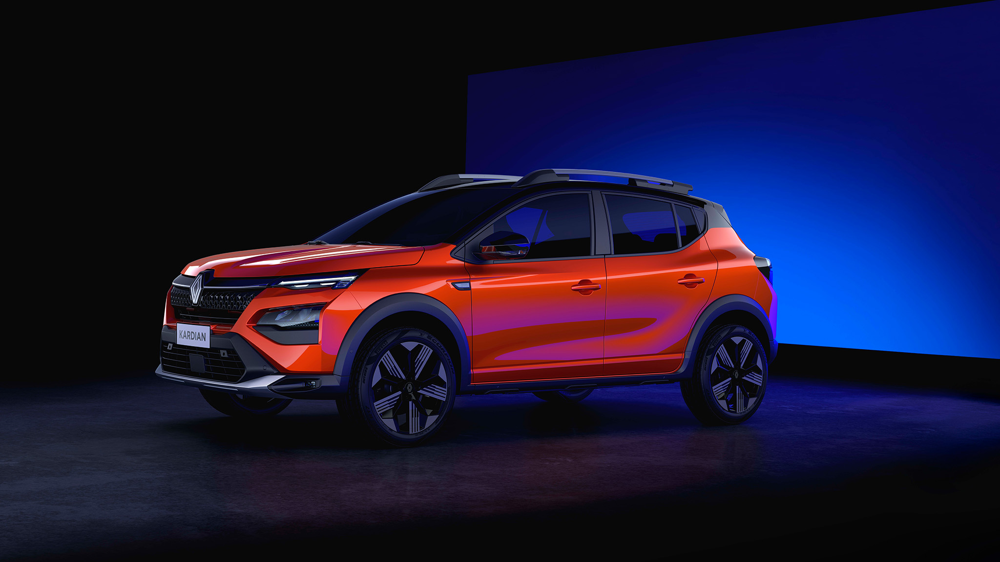
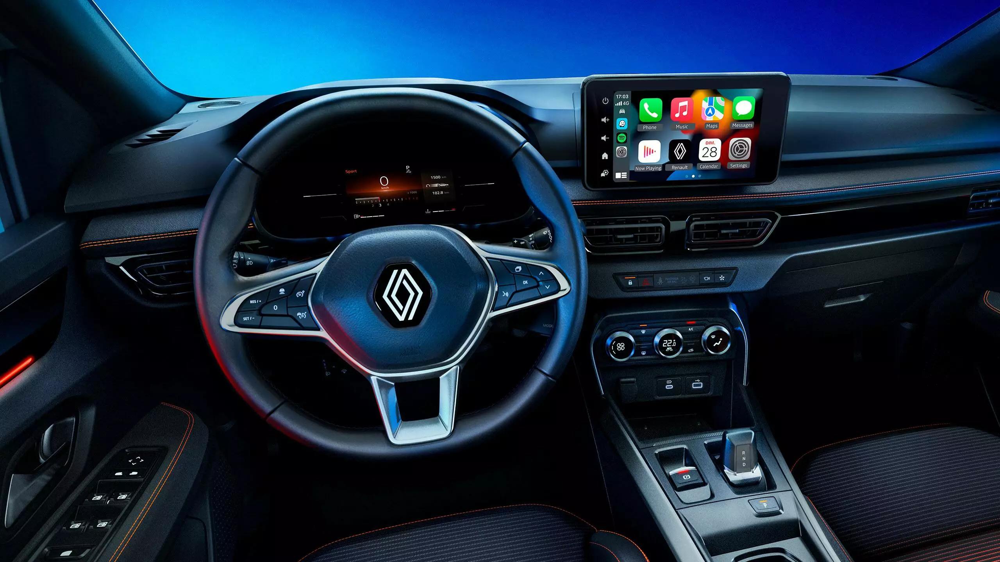
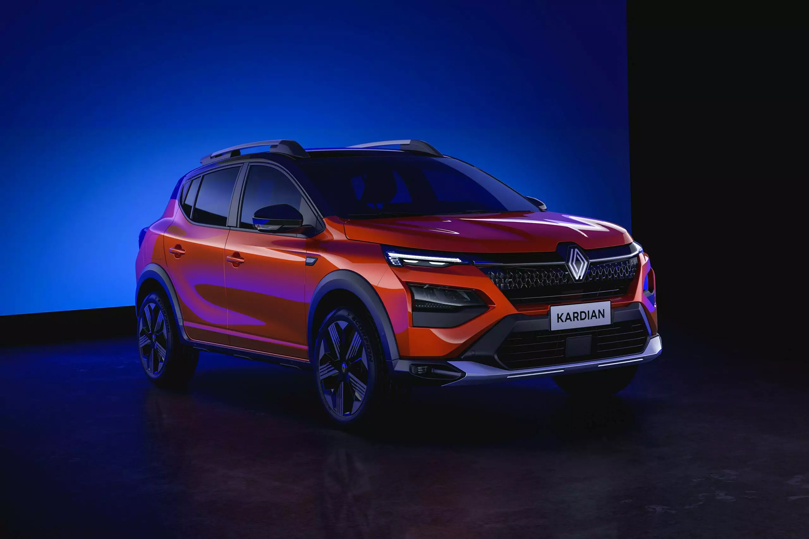
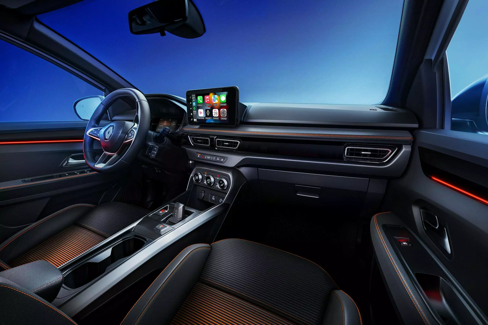
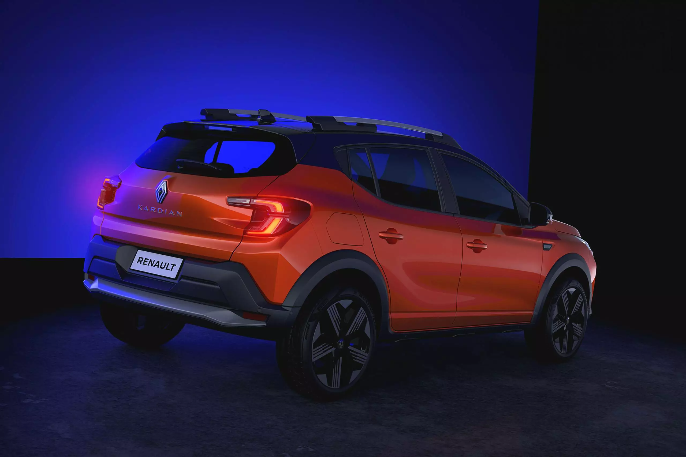

Disfrutá de un espacio placentero diseñado tanto para el conductor como para los pasajeros, con materiales de primera calidad. El habitáculo es amplio y cómodo, con asientos ergonómicos de diseño Renault que aseguran una experiencia de conducción placentera. Además, la consola central está equipada con e-shifter y freno de estacionamiento eléctrico, brindándote un control total en tu viaje. Preparate para dominar el camino con un placer de conducción inigualable.
NUEVO MOTOR: Renault Kardian ofrece 120 CV con su motor turbo de 3 cilindros. Produce una potente aceleración con 200 Nm de torque. Ofrece una conducción suave y dinámica, con cambios de marcha instantáneos gracias a su transmisión EDC de 6 velocidades.
TECNOLOGÍA PRESENTE: La nueva consola elevada es ergonómica lo que permite utilizar el selector de marchas "e-shifter“ y el freno de estacionamiento eléctrico de manera intuitiva.
TABLERO Y PANTALLA: Optimizá tu manejo: personalizá qué información se muestra en el nuevo tablero 100% digital. Disfrutá de una pantalla táctil multimedia moderna y práctica. Gracias a la función de replicación inalámbrica de smartphone con Android Auto™ o Apple CarPlay™, podés acceder directamente a las aplicaciones de tu smartphone desde la pantalla central o utilizando los controles del volante.
SEGURIDAD Y ASISTENCIA: El nuevo Renault Kardian cuenta con control crucero adaptativo, sistema de frenado de emergencia automático y otros 11 controles de asistencia a la conducción.
Galería de fotos








¿Querés más información?
Consultá sin compromiso y conocé todas las opciones de financiación del Renault Kardian.